Boolean Masking & Conditional Selection in NumPy
NumPy arrays ko conditionally filter, query, update, aur categorize karne ka complete practical guide: Comparisons, Boolean Masks, Bitwise Operators (&, |, ~), np.where(), np.select(), 2D Row Filtering, aur Missing Data Sanitization.
Table of Contents
01. Opening — Ask NumPy to Find the Right Students
Suppose tum ek school teacher ya university mentor ho aur tumhare paas class test ke student marks hain. Ab tumhe sirf un meritorious students ki list nikalni hai jinhone 75 ya usse zyada marks score kiye hain:
import numpy as np marks = np.array([45, 78, 92, 61, 85, 70]) # Step 1: Create a Boolean condition mask mask = marks >= 75 # Step 2: Use mask inside square brackets to filter elements filtered_marks = marks[mask] print("Boolean Mask:", mask) print("Filtered High Scorers:", filtered_marks)
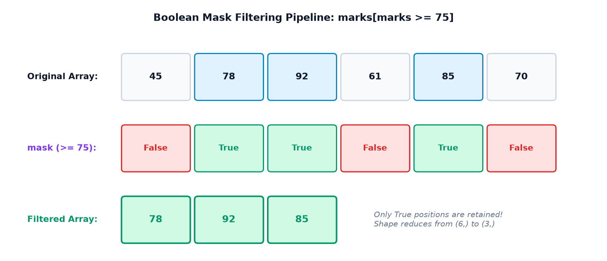
Ye two-step process kaam kaise karta hai?
-
Step 1 — Vectorized Comparison:
marks >= 75har element ko individually 75 se compare karta hai. Jo numbers 75 ya bade hain (78, 92, 85) unke index parTrueplace hota hai, aur baaki parFalse. Resulting array ek Boolean Mask kehlata hai. -
Step 2 — Boolean Indexing Extraction: Jab tum is mask ko
marks[mask]ke roop mein square brackets mein pass karte ho, toh NumPy sirf un positions ki values uthata hai jahan maskTruehai.Falsewali values discard ho jaati hain.
for loop chalana padta, if condition lagani padti, aur append() karna padta. NumPy ka Boolean indexing C-level speed par bina kisi manual loop ke pure millions of records ko fraction of a millisecond mein filter kar deta hai!
02. Section A — Boolean Values & Comparison Operators
Python mein do Boolean primitive values hoti hain: True aur False. NumPy mein jab hum kisi numerical array ko kisi scalar value ya doosre array ke saath compare karte hain, toh output humesha Boolean array (`dtype=bool`) banta hai.
| Operator | Meaning | Example Expression | Resulting Boolean Value |
|---|---|---|---|
> |
Strictly Greater than | np.array([20, 50]) > 30 |
[False, True] |
< |
Strictly Less than | np.array([20, 50]) < 30 |
[True, False] |
>= |
Greater than or equal to | np.array([30, 50]) >= 30 |
[True, True] |
<= |
Less than or equal to | np.array([30, 50]) <= 30 |
[True, False] |
== |
Exact Equality | np.array([25, 40]) == 40 |
[False, True] |
!= |
Not equal to | np.array([25, 40]) != 40 |
[True, False] |
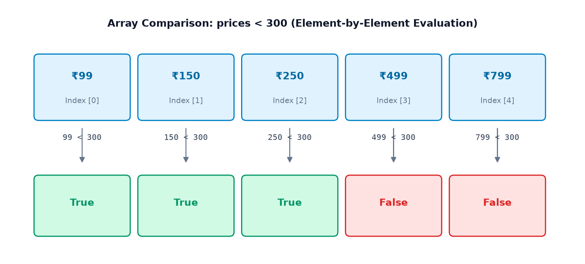
Example 1: Passing Marks Evaluation
import numpy as np marks = np.array([25, 40, 55, 70, 90]) # Passing benchmark is 40 passed_mask = marks >= 40 print("Passed Mask:", passed_mask) print("Data Type:", passed_mask.dtype)
Example 2: E-Commerce Store Price Filtering
import numpy as np prices = np.array([99, 150, 250, 499, 799]) # Check which products are under budget (< 300) under_300 = prices < 300 # Check which product costs exactly 250 exact_250 = prices == 250 print("Under ₹300:", under_300) print("Exact ₹250:", exact_250)
0.1 + 0.2 == 0.3 evaluate karne par False milta hai (kyunki internal value 0.30000000000000004 hoti hai)! Floating-point arrays mein exact equality == ke bajay humesha np.isclose(a, b) ya np.allclose(a, b) use karein:
f_arr = np.array([0.1 + 0.2, 0.3]) np.isclose(f_arr, 0.3) # Returns: array([True, True])
03. Section B — Understanding Boolean Masks & Shape Rules
Boolean Mask kya hota hai? Ek aisa array jisme sirf True aur False values hoti hain aur jiska shape target array ke barabar hota hai. Ye ek photo stencil ya sieve (chalni) ki tarah kaam karta hai: jahan hole (True) hai wahan ka element bahar nikal aata hai, jahan solid (False) hai wo block ho jata hai.
Boolean Indexing vs Integer Indexing & Slicing
- Integer Indexing (Topic 5): Tum specific position number dete ho (jaise
arr[2]yaarr[[0, 3]]). - Slicing (Topic 5): Tum range dete ho (jaise
arr[1:4]). - Boolean Indexing (Topic 12): Tum position nahi dete, balki criteria / condition dete ho. NumPy automatically dhoondhta hai ki kaunsi values condition satisfy karti hain!
Example 1: Temperature Sensor Filtering
import numpy as np temperatures = np.array([22, 27, 31, 19, 35, 29]) # Identify hot days (> 28°C) hot_mask = temperatures > 28 hot_days = temperatures[hot_mask] print("Hot Mask:", hot_mask) print("Extracted Hot Temperatures:", hot_days)
Example 2: Affordable Product Filtering
import numpy as np prices = np.array([120, 450, 250, 800, 300]) affordable_mask = prices <= 300 affordable_items = prices[affordable_mask] print("Affordable Prices (≤ 300):", affordable_items)
Shape Mismatch Error: Kyu Mask ka Shape Match Hona Zaroori Hai?
Agar tum kisi 6-element array ko sirf 2-element Boolean array se index karne ki koshish karoge:
import numpy as np temps = np.array([22, 27, 31, 19, 35, 29]) # length = 6 short_mask = np.array([True, False]) # length = 2 (Mismatch!) try: res = temps[short_mask] except IndexError as e: print("IndexError Caught:", e)
The Fix: Hamesha ensure karein ki mask usi array ke comparison se generate hua ho (temps > 25) taaki length aur dimension exact match karein.
04. Section C — Combining Multiple Conditions (&, |, ~)
Real-life filtering mein hume aksar multiple conditions combine karni padti hain (jaise: "Marks 40 se zyada hon AND 80 se kam hon").
NumPy mein standard Python ke and, or, aur not keywords kaam nahi karte. NumPy array ke elements par element-wise logical operations ke liye bitwise operators use kiye jaate hain:
&: Logical AND — Dono conditions True honi chahiye.|: Logical OR — Kam se kam ek condition True honi chahiye.~: Logical NOT (Invert) — True ko False aur False ko True bana deta hai.
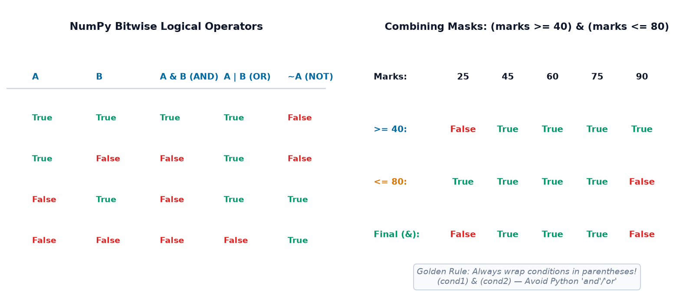
Parentheses Rule: Sabse Badi Beginner Galti!
Python operator precedence mein & aur | ka precedence comparison operators (>=, <=) se zyada high hota hai! Agar tum parentheses nahi lagaoge:
marks >= 40 & marks <= 80 # SyntaxError / TypeError! # Python tries to evaluate (40 & marks) first!
Golden Rule: Hamesha har individual comparison ko parentheses () ke andar wrap karein:
(marks >= 40) & (marks <= 80) # Correct!
Example 1: Marks within a Specific Range (AND: &)
import numpy as np marks = np.array([25, 45, 60, 75, 90]) # Select marks between 40 and 80 inclusive mask = (marks >= 40) & (marks <= 80) print("Mask:", mask) print("Filtered Marks:", marks[mask])
Example 2: Discount Eligibility (OR: |)
Store discount de raha hai un products par jo ya toh budget clearance mein hain (< 300) ya luxury premium hain (≥ 700):
import numpy as np prices = np.array([150, 450, 700, 250, 900]) # Budget (< 300) OR Premium (>= 700) disc_mask = (prices < 300) | (prices >= 700) print("Discount Eligible Products:", prices[disc_mask])
Example 3: Inverting Selection with NOT (~)
import numpy as np marks = np.array([25, 45, 60, 75, 90]) mid_range_mask = (marks >= 40) & (marks <= 80) # Select marks OUTSIDE the 40-80 range outliers_mask = ~mid_range_mask print("Outside Range Marks:", marks[outliers_mask])
and aur or operators kisi object ka single boolean truth value maangte hain (jaise bool(obj)). Lekin ek 5-element array mein kuch elements True ho sakte hain aur kuch False! Python confuse ho jata hai aur error raise karta hai:
ValueError: The truth value of an array with more than one element is ambiguous. Use a.any() or a.all(). Isliye arrays ke liye humesha & aur | use karein!
05. Section D — Conditional Selection with np.where()
Boolean indexing elements ko array se bahar extract kar leti hai (shape choti ho sakti hai). Lekin kya ho agar tum original array ki shape preserve rakhna chahte ho aur har element par ek if-else branch lagana chahte ho?
Iske liye NumPy ka sabse powerful function hai np.where():
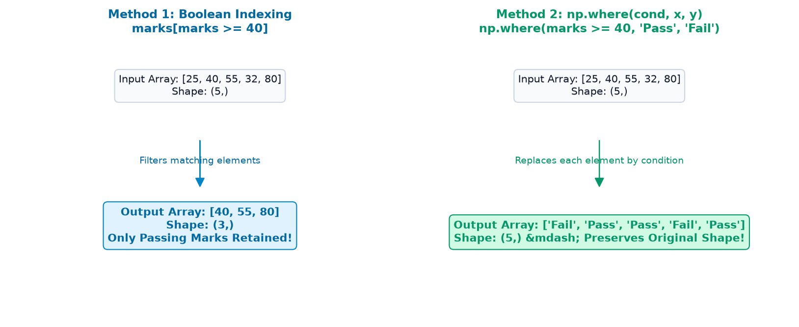
Example 1: Pass or Fail Classification
import numpy as np marks = np.array([25, 40, 55, 32, 80]) # If marks >= 40 -> 'Pass', else -> 'Fail' status = np.where(marks >= 40, "Pass", "Fail") print("Student Marks:", marks) print("Student Status:", status)
Example 2: 10% Discount on Expensive Products
import numpy as np prices = np.array([100, 250, 500, 800]) # Products >= 500 get 10% off (multiply by 0.9), others stay unchanged final_prices = np.where(prices >= 500, prices * 0.9, prices) print("Original Prices:", prices) print("Discounted Prices:", final_prices)
np.where() with 1 Argument: Finding Indices of True Elements
Agar tum np.where(condition) ko sirf condition ke saath call karte ho (bina x aur y ke), toh ye un saare elements ke indices ka tuple return karta hai jo condition satisfy karte hain:
import numpy as np prices = np.array([100, 250, 500, 800]) # Find which index positions have expensive items expensive_indices = np.where(prices >= 500) print("Resulting Tuple:", expensive_indices) print("Index Array:", expensive_indices[0])
06. Section E — Multi-Condition Categorization with np.select()
Jab do se zyada outcomes hote hain (jaise if-elif-elif-else ladder), toh np.where() ko nest karna messy aur unreadable ho jata hai. Iske liye NumPy ka standard tool hai np.select():
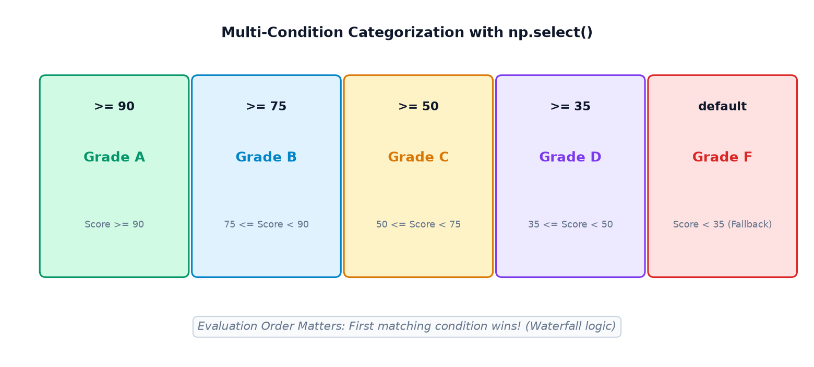
Example 1: Academic Grading System (A, B, C, D, F)
Notice karo conditions ka order hamesha highest se lowest arrange kiya jata hai:
import numpy as np marks = np.array([95, 82, 68, 45, 30]) conditions = [ marks >= 90, # Grade A marks >= 75, # Grade B marks >= 50, # Grade C marks >= 35 # Grade D ] choices = ["A", "B", "C", "D"] grades = np.select(conditions, choices, default="F") print("Marks :", marks) print("Grades:", grades)
Example 2: Retail Sales Tier Classification
import numpy as np sales = np.array([12000, 45000, 28000, 60000, 15000]) s_cond = [ sales >= 50000, sales >= 25000 ] s_choices = ["High", "Medium"] tier_labels = np.select(s_cond, s_choices, default="Low") print("Sales Amount:", sales) print("Tier Labels :", tier_labels)
marks >= 50 ko marks >= 90 se pehle likh doge, toh 95 score karne wale student ko bhi Grade C mil jayega! Kyunki NumPy pehli condition True hote hi us row ko lock kar deta hai. Hamesha specific/strict conditions ko pehle rakhein.
07. Section F — Counting & Validating Conditions
Data analysis mein aksar hume filtered elements dekhne se pehle ye check karna hota hai: "Kitne elements match karte hain?" ya "Kya koi dangerous abnormal reading aayi hai?"
np.count_nonzero(mask): Mask mein kitneTrueelements hain unka exact count karta hai (fastest C-implementation).np.sum(mask): Boolean array par sum lene parTrueko 1 aurFalseko 0 treat karke total count deta hai.np.any(condition): ReturnsTrueagar kam se kam ek (at least one) element True ho. (Disaster / Alarm monitoring ke liye ideal).np.all(condition): ReturnsTruesirf tab jab saare ke saare (every single) elements True hon. (Quality control certification ke liye ideal).
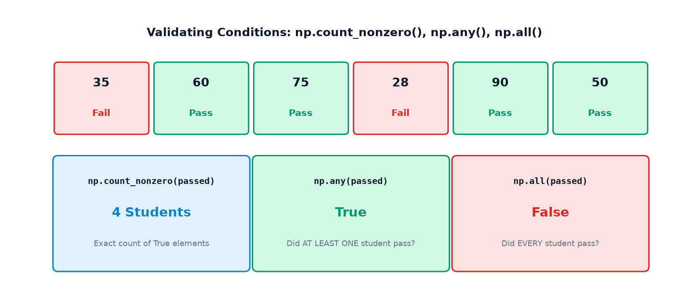
Example 1: Student Pass Rate & Universal Success Validation
import numpy as np marks = np.array([35, 60, 75, 28, 90, 50]) passed = marks >= 40 print("Total Students:", len(marks)) print("Passed Students:", np.count_nonzero(passed)) print("Passing Percentage:", f"{(np.sum(passed)/len(marks))*100:.1f}%") print("Did at least one pass? (any):", np.any(passed)) print("Did everyone pass? (all):", np.all(passed))
Example 2: Industrial Pressure Boiler Safety Check
import numpy as np # Boiler pressure sensor readings (normal limit: 100 to 105 psi, critical: > 104 psi) pressures = np.array([101.3, 102.5, 104.8, 101.9, 103.2]) danger_spikes = pressures > 104.0 within_safety_limits = (pressures >= 100.0) & (pressures <= 105.0) if np.any(danger_spikes): print("WARNING: Danger spike detected! Reading:", pressures[danger_spikes]) if np.all(within_safety_limits): print("STATUS: All readings within structural tolerance limits.")
08. Section G — In-Place Array Updates Using Boolean Masks
NumPy Boolean masking sirf data read karne ke liye nahi hai. Tum unhi selected elements par assignment karke array ko directly mutate (update) kar sakte ho!
Pattern: array[condition] = new_value
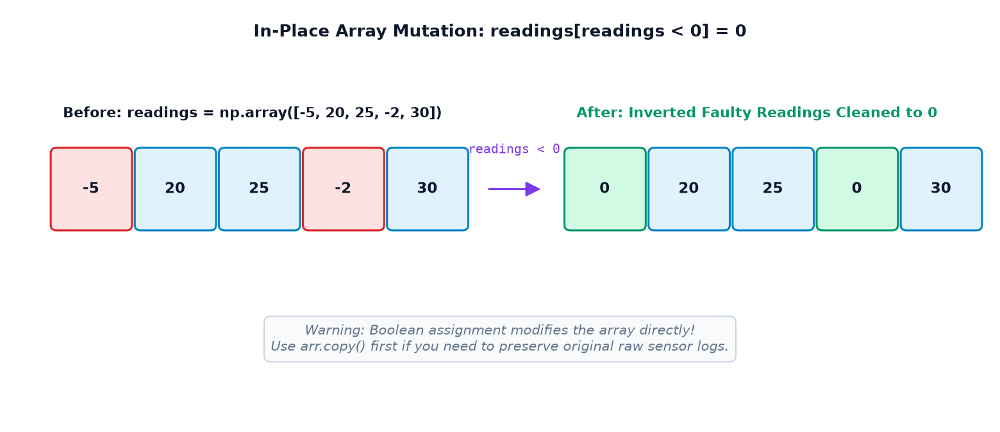
Example 1: Replace Corrupt Negative Sensor Readings
import numpy as np readings = np.array([-5, 20, 25, -2, 30]) # Negative numbers are physical anomalies; clamp them to 0 readings[readings < 0] = 0 print("Sanitized Readings:", readings)
Example 2: Safe Copy vs Accidental In-Place Overwrite
Hamesha yaad rakhein ki Boolean assignment original array ko permanently modify kar deta hai. Agar tumhe original data intact rakhna hai, toh pehle .copy() banayein:
import numpy as np marks = np.array([45, 60, 72, 85]) # Give 5 bonus marks to high scorers (>= 70) safely updated_marks = marks.copy() updated_marks[updated_marks >= 70] += 5 print("Original Marks (Protected):", marks) print("Updated Marks (With Bonus):", updated_marks)
09. Section H — Boolean Masking with 2D Arrays
2D matrices (jaise spreadsheets aur tabular datasets) par Boolean selection do alag-alag patterns mein kaam karti hai:
| Operation | Code Syntax | Output Dimension | When to Use |
|---|---|---|---|
| Element-Level Extraction | matrix[matrix >= 80] |
Flat 1D Array (Matching numbers only) | Poori matrix se threshold elements collect karne ke liye |
| Row-Level Filtering | matrix[matrix[:, col] >= 70] |
2D Array (Preserves all columns!) | Specific column ke score par poore student rows filter karne ke liye |
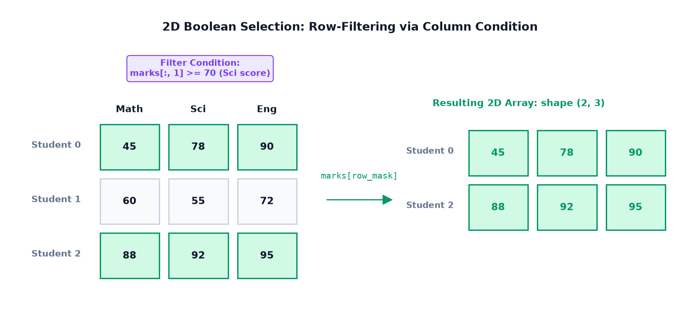
Example 1: Element-Level Selection Flattens Output
import numpy as np marks = np.array([ [45, 78, 90], [60, 55, 72], [88, 92, 95] ]) mask = marks >= 80 print("2D Mask Shape:", mask.shape) print("Extracted Elements:", marks[mask]) print("Extracted Shape:", marks[mask].shape)
Example 2: Select Students Based on Science Subject Score (Row Filtering)
3 students x 3 subjects (Column 0: Math, Column 1: Science, Column 2: English). Hume un students ke poore marksheet rows chahiye jinke Science (Column 1) mein 70 ya zyada marks hon:
import numpy as np marks = np.array([ [45, 78, 90], # Student 0: Science = 78 (Pass) [60, 55, 72], # Student 1: Science = 55 (Fail condition) [88, 92, 95] # Student 2: Science = 92 (Pass) ]) # Slicing column 1 gives a 1D array of science scores row_mask = marks[:, 1] >= 70 selected_students = marks[row_mask] print("Row Mask:", row_mask) print("Selected Student Rows (2D):\n", selected_students)
10. Section I — Conditional Selection & Missing Values
Topics 10 aur 11 mein humne dekha tha ki np.nan calculations ko contaminate kar deta hai. Boolean masking se hum directly valid measurements ko isolate kar sakte hain.
np.isnan(arr): Jo elements NaN hain wahanTruereturn karta hai.~np.isnan(arr): NOT operator lagane se un saare valid elements parTruemilta hai jo NaN nahi hain.
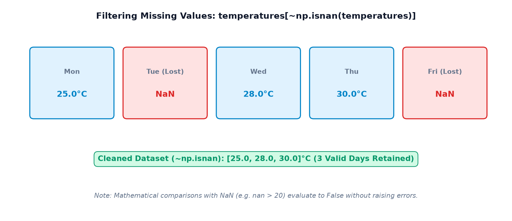
Example 1: Extract Clean Valid Temperature Readings
import numpy as np temps = np.array([25.0, np.nan, 28.0, 30.0, np.nan]) valid_mask = ~np.isnan(temps) clean_temps = temps[valid_mask] print("Valid Mask:", valid_mask) print("Sanitized Temps:", clean_temps) print("Clean Mean:", np.mean(clean_temps))
Example 2: Compound Filter — Valid Readings Above a Threshold
import numpy as np temps = np.array([25.0, np.nan, 28.0, 30.0, np.nan]) # Check BOTH: Must be a valid reading AND > 26.0°C hot_valid_mask = (~np.isnan(temps)) & (temps > 26.0) hot_readings = temps[hot_valid_mask] print("Hot Valid Readings:", hot_readings)
11. Section J — Real-World Practical Case Studies
Aao 6 detailed practical applications dekhte hain jahan Boolean masking real industry problems solve karti hai:
Application 1: Student Scholarship Eligibility
Scholarship ke liye eligibility criteria: Mathematics mein ≥ 85 AND Science mein ≥ 75:
import numpy as np students = ["Aarav", "Bhavya", "Chirag", "Divya", "Esha"] math = np.array([85, 92, 68, 95, 74]) sci = np.array([78, 88, 65, 92, 70]) eligible_mask = (math >= 85) & (sci >= 75) print("Eligible Students:") for name, ok in zip(students, eligible_mask): if ok: print(f" • {name} (Math: {math[students.index(name)]}, Sci: {sci[students.index(name)]})")
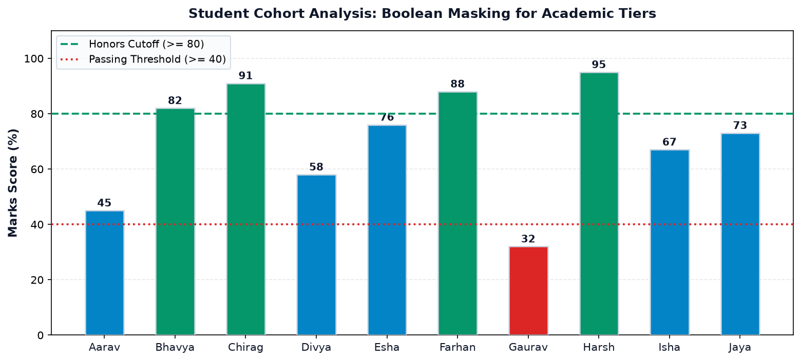
Application 2: E-Commerce Dynamic Tiered Discounts
Agar cart value ≥ ₹1,000 hai toh 15% discount lagao, warna standard price rakho:
import numpy as np cart_values = np.array([450, 1200, 2500, 800, 3200]) discounted_carts = np.where(cart_values >= 2000, cart_values * 0.85, cart_values) print("Original Carts:", cart_values) print("Final Payables:", discounted_carts)
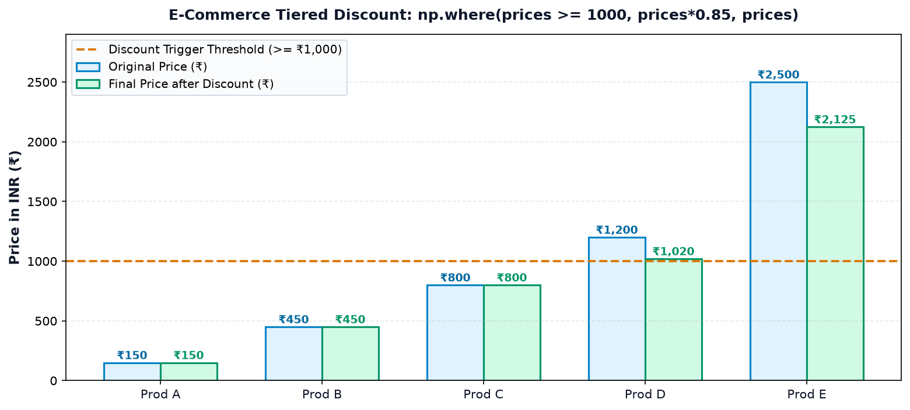
Application 3: Heatwave Alert & Red Flag Warning
import numpy as np days = ["Mon", "Tue", "Wed", "Thu", "Fri", "Sat", "Sun"] temps = np.array([38.5, 41.2, 43.8, 39.0, 44.5, 42.0, 37.8]) heatwave_mask = temps >= 42.0 print("Heatwave Alert Days:") for d, t in zip(np.array(days)[heatwave_mask], temps[heatwave_mask]): print(f" ALERT: {d} reached {t}°C")
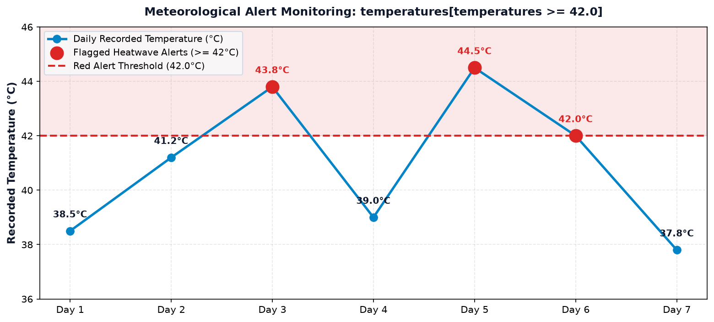
Application 4: Computer Vision — Image Pixel Binarization
Computer vision mein background separation ke liye brightness thresholding use hoti hai:
import numpy as np image = np.array([ [50, 120, 200], [80, 220, 240], [30, 90, 180] ]) # Threshold pixel brightness >= 150 binary_mask = np.where(image >= 150, 255, 0) print("Binarized Image (0 or 255):\n", binary_mask)
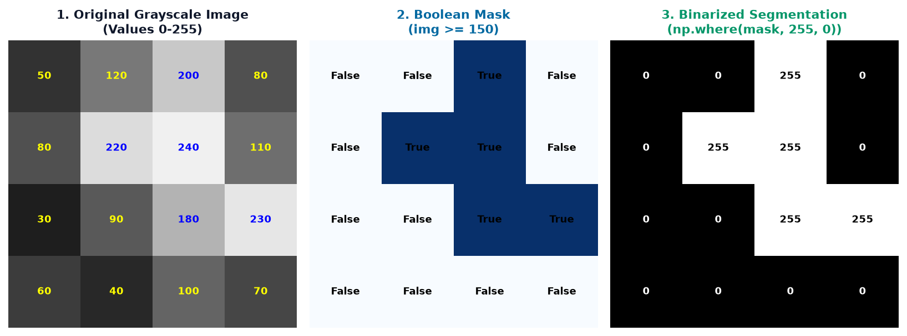
12. Section K — Common Mistakes & Debugging Guide
NumPy Boolean masking aur conditional selection mein beginners aksar in 5 critical pitfalls mein phaste hain:
Wrong Code:
import numpy as np scores = np.array([30, 50, 70]) mask = (scores >= 40) and (scores <= 60) # CRASH: ValueError!
Error: ValueError: The truth value of an array with more than one element is ambiguous. Use a.any() or a.all()
mask = (scores >= 40) & (scores <= 60) # Bitwise element-wise AND
Wrong Code:
mask = scores >= 40 & scores <= 60 # TypeError / Unexpected Precedence!
Why it happens: & has higher precedence than >=. Python evaluates 40 & scores first!
mask = (scores >= 40) & (scores <= 60) # Always wrap each clause in ()
Confusion: arr[arr >= 50] returns an array of matching elements (e.g. [50, 70]), whereas np.where(arr >= 50) returns a tuple of indices: (array([1, 2]),).
- Agar values filter karni hain → Use
arr[mask]. - Agar if-else replacements karni hain → Use
np.where(cond, x, y). - Agar matching index positions chahiye → Use
np.where(cond)[0].
Wrong Code:
raw_sensor = np.array([10, 20, 30]) modified = raw_sensor modified[modified > 15] = 99 # BUG: raw_sensor is also permanently changed!
modified = raw_sensor.copy() # Creates independent memory buffer modified[modified > 15] = 99 # raw_sensor remains untouched
Wrong Code:
# Putting lenient condition first conds = [marks >= 50, marks >= 90] choices = ["Pass", "Topper"] res = np.select(conds, choices) # A student with 98 gets "Pass" instead of "Topper"!
conds = [marks >= 90, marks >= 50] # Strict conditions first! choices = ["Topper", "Pass"]
13. Section M — Interactive Practice Suite & Self-Assessment
Har question ke neeche Reveal Solution button par click karke output aur explanation check karein.
Part A: 10 Output Prediction Questions
Prediction 01 arr = np.array([10, 20, 30, 40]) • What is arr[arr > 25]?
Predicted Output: [30 40]
Explanation: Elements strictly greater than 25 are 30 and 40.
Prediction 02 arr = np.array([5, 12, 18, 25]) • What is np.count_nonzero((arr >= 10) & (arr <= 20))?
Predicted Output: 2
Explanation: Numbers between 10 and 20 are 12 and 18 (count = 2).
Prediction 03 arr = np.array([10, -5, 20, -8]) • What is np.where(arr < 0, 0, arr)?
Predicted Output: [10 0 20 0]
Explanation: Negative numbers are replaced by 0; positive numbers remain unchanged.
Prediction 04 arr = np.array([100, 200, 300]) • What is np.all(arr > 50)?
Predicted Output: True
Explanation: Every element (100, 200, 300) is strictly greater than 50.
Prediction 05 arr = np.array([5, 15, 25]) • What is np.any(arr > 20)?
Predicted Output: True
Explanation: Element 25 satisfies the condition, so at least one True exists.
Prediction 06 arr = np.array([[1, 2], [3, 4]]) • What is arr[arr > 2]?
Predicted Output: [3 4]
Explanation: Element-level boolean indexing on a 2D array always returns a 1D flat array.
Prediction 07 arr = np.array([10, np.nan, 30]) • What is arr[~np.isnan(arr)]?
Predicted Output: [10. 30.]
Explanation: ~np.isnan() drops missing NaN values, returning only valid numbers.
Prediction 08 arr = np.array([50, 75, 90]) • np.select([arr >= 80, arr >= 60], ["A", "B"], default="C")?
Predicted Output: ['C' 'B' 'A']
Explanation: 50 gets fallback "C", 75 matches second condition ("B"), 90 matches first ("A").
Prediction 09 arr = np.array([1, 2, 3, 4, 5]); arr[arr % 2 != 0] = -1 • What is arr?
Predicted Output: [-1 2 -1 4 -1]
Explanation: Odd numbers (1, 3, 5) are replaced in-place by -1.
Prediction 10 arr = np.array([[10, 20], [30, 40], [50, 60]]) • What is arr[arr[:, 1] > 30]?
Predicted Output:[[30 40]
[50 60]]
Explanation: Column 1 has values [20, 40, 60]. Rows with column 1 > 30 are rows 1 and 2.
Part B: 8 Coding Exercises
Exercise 01 Extract Even Numbers Greater than 10
import numpy as np arr = np.array([4, 12, 15, 18, 21, 24, 7]) res = arr[(arr % 2 == 0) & (arr > 10)] print("Result:", res)
Exercise 02 Cap Outliers Above 95th Percentile
import numpy as np arr = np.array([10.0, 20.0, 25.0, 30.0, 35.0, 40.0, 200.0]) p95 = np.percentile(arr, 95) capped = arr.copy() capped[capped > p95] = p95 print("Capped Array:", capped)
Exercise 03 Impute Column-Wise NaNs in 2D Array
import numpy as np mat = np.array([[10.0, 20.0], [np.nan, 40.0], [30.0, np.nan]]) col_means = np.nanmean(mat, axis=0) for col in range(mat.shape[1]): mask = np.isnan(mat[:, col]) mat[mask, col] = col_means[col] print("Imputed Matrix:\n", mat)
Exercise 04 Find Index Positions of Positive Numbers
import numpy as np arr = np.array([-5, 0, 12, -3, 8, 0]) pos_indices = np.where(arr > 0)[0] print("Indices:", pos_indices)
Exercise 05 Vectorized Tier Classification with np.select()
import numpy as np scores = np.array([35, 55, 75, 95]) tiers = np.select([scores >= 90, scores >= 70, scores >= 50], ["Expert", "Intermediate", "Novice"], default="Beginner") print("Tiers:", tiers)
Exercise 06 Select Rows Where ALL Subjects Exceed 50
import numpy as np mat = np.array([[60, 70, 80], [40, 90, 85], [55, 65, 75]]) passed_all = np.all(mat > 50, axis=1) print("Consistent Students:\n", mat[passed_all])
Exercise 07 Count Outliers Beyond 2 Standard Deviations
import numpy as np data = np.array([10, 11, 10, 12, 10, 50]) count = np.count_nonzero(np.abs(data - np.mean(data)) > 2 * np.std(data)) print("Outlier Count:", count)
Exercise 08 Image Thresholding Binarization
import numpy as np img = np.array([[20, 150], [210, 80]]) binarized = np.where(img >= 128, 255, 0) print("Binary Image:\n", binarized)
Part C: 8 Multiple Choice Questions
MCQ 01 NumPy array ke elements par multiple conditions combine karne ke liye kaunsa operator use hota hai?
A) and
B) &&
C) &
D) AND
Correct Answer: C) &
Explanation: NumPy bitwise element-wise & operator use karta hai. Python ka and multi-element array par crash ho jata hai.
MCQ 02 np.where(condition, x, y) mein x kab select hota hai?
A) Jab condition False ho
B) Jab condition True ho
C) Hamesha
D) Kabhi nahi
Correct Answer: B) Jab condition True ho
MCQ 03 Kisi Boolean mask mein kitne True values hain, unhe count karne ka sabse fast function kaunsa hai?
A) len(mask)
B) np.count_nonzero(mask)
C) mask.count(True)
D) np.size(mask)
Correct Answer: B) np.count_nonzero(mask)
MCQ 04 (marks >= 40) & (marks <= 80) mein parentheses lagana kyu compulsory hai?
A) Sirf code readability ke liye
B) Kyunki & ka operator precedence comparison operators se zyada high hota hai
C) Python syntax rule for arrays
D) NumPy memory alignment requirement
Correct Answer: B) Kyunki & ka operator precedence comparison operators se zyada high hota hai
MCQ 05 2D array matrix par matrix[matrix > 50] evaluate karne par output shape kya hogi?
A) Same 2D shape with zeros
B) 1D flat array of matching elements
C) Tuple of coordinates
D) Matrix with NaNs
Correct Answer: B) 1D flat array of matching elements
MCQ 06 np.any() aur np.all() mein kya farq hai?
A) any checks at least one True; all checks every element is True
B) all checks at least one True; any checks every element is True
C) Dono exact same hain
D) any works on 1D only; all works on 2D only
Correct Answer: A) any checks at least one True; all checks every element is True
MCQ 07 np.select(conditions, choices, default) mein agar multiple conditions True ho jayein, toh kaunsa choice select hota hai?
A) Last matching condition
B) First matching condition (Waterfall logic)
C) Error raise hota hai
D) Random choice
Correct Answer: B) First matching condition (Waterfall logic)
MCQ 08 Missing values ko filter karne ke liye kaunsa Boolean mask use karna chahiye?
A) arr == np.nan
B) arr != np.nan
C) ~np.isnan(arr)
D) np.notnan(arr)
Correct Answer: C) ~np.isnan(arr)
Explanation: IEEE 754 float rules ke mutabiq np.nan == np.nan hamesha False hota hai. Isliye ~np.isnan(arr) hi standard reliable tarika hai.
14. Section N — Capstone Mini-Project: Smart Student & Shop Data Filter
NumPy Boolean masking, conditional updates, aur Matplotlib visualization ko integrate karke ek complete end-to-end data filtering engine build karte hain:
import numpy as np print("==================================================") print(" CODEVERSE SMART STUDENT & SHOP DATA FILTER ") print("==================================================") # ------------------------------------------------------------------------- # MODULE 1: STUDENT PERFORMANCE & BONUS ENGINE # ------------------------------------------------------------------------- marks = np.array([45, 82, 91, 58, 76, 88, 32, 95, 67, 73]) passed_mask = marks >= 40 honors_mask = marks >= 80 grades = np.select([marks >= 85, marks >= 70, marks >= 50], ["A", "B", "C"], default="F") # Grace marks: Students in 65-69 band get +3 grace marks boosted_marks = marks.copy() grace_mask = (boosted_marks >= 65) & (boosted_marks < 70) boosted_marks[grace_mask] += 3 print("\n>>> 1. Academic Performance Summary:") print(f" Total Students Analyzed : {len(marks)}") print(f" Students Passed (>= 40) : {np.count_nonzero(passed_mask)}") print(f" Honors Cohort (>= 80) : {np.count_nonzero(honors_mask)}") print(" Assigned Grades :", grades) print(" Grace Boosted Marks :", boosted_marks) # ------------------------------------------------------------------------- # MODULE 2: RETAIL STORE DISCOUNT & PRICING ENGINE # ------------------------------------------------------------------------- prices = np.array([150, 450, 800, 1200, 250, 3000, 600]) # High ticket items (>= 1000) get 15% off final_prices = np.where(prices >= 1000, prices * 0.85, prices) affordable_products = final_prices[final_prices <= 500] print("\n>>> 2. Retail Pricing & Discount Engine:") print(" Original Inventory Prices : ₹", prices) print(" Discounted Final Prices : ₹", final_prices) print(" Affordable Items (≤ ₹500) : ₹", affordable_products) # ------------------------------------------------------------------------- # MODULE 3: SENSOR MONITORING & MISSING DATA SANITIZATION # ------------------------------------------------------------------------- sensors = np.array([24.2, 25.1, np.nan, 29.8, 24.8, 31.5, np.nan]) valid_filter = ~np.isnan(sensors) sanitized_readings = sensors[valid_filter] critical_alarm = sanitized_readings > 30.0 print("\n>>> 3. Industrial Sensor Safety & Quality Check:") print(f" Total Telemetry Packets : {len(sensors)}") print(f" Valid Recovered Readings : {sanitized_readings}") print(f" Alarm Triggered (> 30°C) : {np.any(critical_alarm)} (Found: {sanitized_readings[critical_alarm]})") print("==================================================")
15. Section O — Function Reference Cheat Sheet & Architecture Map
NumPy Boolean masking aur conditional selection ke core functions ka quick reference:
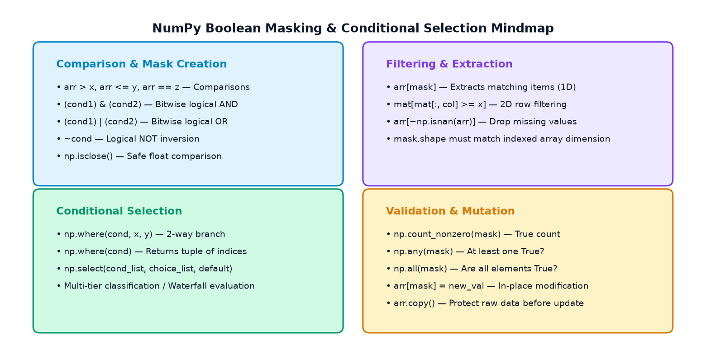
| Operation / Function | Primary Purpose | Output Type / Shape | Example Code |
|---|---|---|---|
arr[mask] |
Extract elements where mask is True | 1D flat array (filtered items) | arr[arr > 50] |
& / | / ~ |
Bitwise AND, OR, and NOT | Boolean array matching input shape | (a > 10) & (a < 50) |
np.where(cond, x, y) |
2-way conditional replacement | Same shape as input array | np.where(a >= 40, 'P', 'F') |
np.where(cond) |
Get index coordinates of True items | Tuple of coordinate arrays | idx = np.where(a > 50)[0] |
np.select(conds, choices) |
Multi-condition waterfall grading | Same shape as input array | np.select([a>90, a>75], ['A','B']) |
np.count_nonzero(mask) |
Count how many conditions are True | Integer scalar count | np.count_nonzero(a > 0) |
np.any(mask) / np.all(mask) |
Logical test across entire array | Boolean scalar (True / False) | np.any(boiler > 104) |
arr[mask] = new_val |
In-place selective value update | Modifies original array buffer | arr[arr < 0] = 0 |
~np.isnan(arr) |
Filter out missing NaN data | Boolean valid data mask | clean = arr[~np.isnan(arr)] |
np.where() aur np.select() se data categorize karna, 2D row-level filtering perform karna, aur missing values ko cleanly sanitize karna seekh chuke ho. Agle topic (Topic 13: Sorting, Searching & Counting) mein hum arrays ko superfast rearrange aur binary-search karna seekhenge!